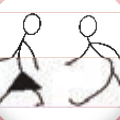

Cardinal Directions help pilots, drivers, and captains choose the shortest and safest route; and
(d) it is useful for safety and security agencies. The Cardinal Directions help safety and security agencies in communicating and giving instructions during dangers and emergencies.

Activity 6
At school or home, play a hide-and-seek game with your friends. The seeker should then follow the directional instructions given by the game leader to find those who are hiding.